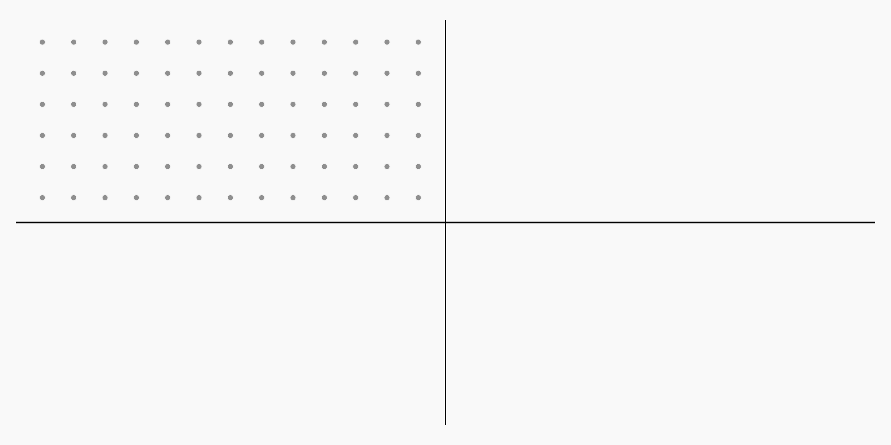

“Creativity is the ability to introduce order into the randomness of nature”
– Eric Hoffer
Well many of us think of creativity as something which is specifically associated with human being’s and it may be true to a certain extent at least today it’s not the ability which a computer possesses , but even if computers cannot themselves create something, they can still be used as tools to create something beautiful and in this blog post I’ll try to explain to you a simple example of what that might look like.
So, what exactly is Generative Art?
Generative Art is a form of art in which beautiful patterns, images, forms are made by using certain algorithms. And today we will be creating something which is called a flow field and then we will add some reflections to it to create a symmetrical pattern. We will be using the P5.js library which is a JavaScript library for making digital sketches.
So let’s get started.
Firstly we’ll have to include the CDN link of the P5.js library in our project.
And that’s all we need to add in our html file.
Then you can add some styling to the html to center the canvas which we will be creating
Now we will start with JavaScript
We will begin by initializing the CanvasWidth and CanvasHeight variable.
Then well declare the points array and a variable called scale the value of scale can be adjusted according to your liking ( try taking different values and see the results)
In the setup function we will create a canvas with width equal to CanvasWidth and height equal to CanvasHeight
Background colour will be black,
Set the angle mode to degrees and noise detail to 1 and pixel density as 1
Initialize the variable density according to your preference but higher density may pose some performance issues and may lag so we will keep it at 64.
The space variable is just the distance between the points
After this a nested for loop will be required to initialize the positions of all the points( it will look like a 2D matrix)

Just so that it does not remain uniform we will just add a bit of randomness to it using the random() function
This completes our setup, now we need update the positions of these points continuously using the draw function in order to give it a flow field like effect
The draw( ) function runs continuously, updates at each frame
We will initialise varibale cw as CanvasWidth and ch as canvasHeight
The noStroke( ) function removes the stroke from the ellipse which we will be drawing
We will run a for loop to draw all the points in the array
The colour mapping is done according to the position of the points on the canvas
The ellipse(x,y,radius) function is used to draw an ellipse in this case the radius is 1
And at last we get a flow field with fourfold symmetry
you can change the parameters and experiment with other things
codepen
11/22/3333
Name Surname
.png)